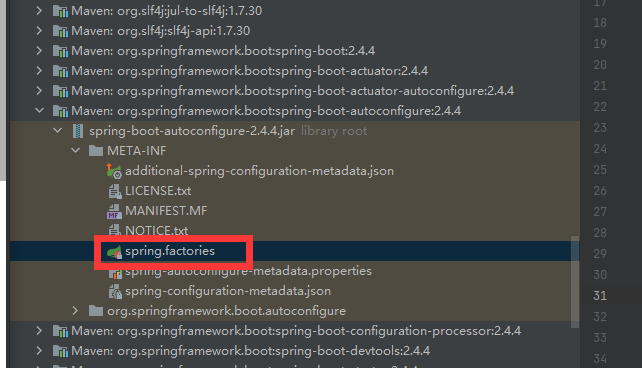

@SpringBootApplication=三个注解之和：
Spring Boot启动的时候会通过@EnableAutoConfiguration注解找到META-INF/spring.factories配置文件中的所有自动配置类，并对其进行加载。而这些自动配置类都是以AutoConfiguration结尾来命名的，它实际上就是一个JavaConfig形式的Spring容器配置类，它能通过以Properties结尾命名的类中取得在全局配置文件中配置的属性如：server.port，而XxxxProperties类是通过@ConfigurationProperties注解与全局配置文件中对应的属性进行绑定的。
举一个最常见的例子：
我们点开spring-boot-autoconfigure-2.4.4.jar包，查看/META-INF/spring.factories文件

里面声明了很多配置，节选如下：
1 2 3 4 5 6 7 8 9 10 11 12 13 14 15 16 17 18 19 20 21 22 23 24 25 26 27 28 29 30 31 32 33 34 35 36 37 38 39 40 41 42 org.springframework.context.ApplicationContextInitializer =\ org.springframework.boot.autoconfigure.SharedMetadataReaderFactoryContextInitializer,\ org.springframework.boot.autoconfigure.logging.ConditionEvaluationReportLoggingListener org.springframework.context.ApplicationListener =\ org.springframework.boot.autoconfigure.BackgroundPreinitializer org.springframework.boot.autoconfigure.AutoConfigurationImportListener =\ org.springframework.boot.autoconfigure.condition.ConditionEvaluationReportAutoConfigurationImportListener org.springframework.boot.autoconfigure.AutoConfigurationImportFilter =\ org.springframework.boot.autoconfigure.condition.OnBeanCondition,\ org.springframework.boot.autoconfigure.condition.OnClassCondition,\ org.springframework.boot.autoconfigure.condition.OnWebApplicationCondition org.springframework.boot.autoconfigure.EnableAutoConfiguration =\ org.springframework.boot.autoconfigure.admin.SpringApplicationAdminJmxAutoConfiguration,\ org.springframework.boot.autoconfigure.aop.AopAutoConfiguration,\ org.springframework.boot.autoconfigure.amqp.RabbitAutoConfiguration,\ org.springframework.boot.autoconfigure.batch.BatchAutoConfiguration,\ org.springframework.boot.autoconfigure.cache.CacheAutoConfiguration,\ org.springframework.boot.autoconfigure.cassandra.CassandraAutoConfiguration,\ ....... org.springframework.boot.diagnostics.FailureAnalyzer =\ org.springframework.boot.autoconfigure.data.redis.RedisUrlSyntaxFailureAnalyzer,\ org.springframework.boot.autoconfigure.diagnostics.analyzer.NoSuchBeanDefinitionFailureAnalyzer,\ org.springframework.boot.autoconfigure.flyway.FlywayMigrationScriptMissingFailureAnalyzer,\ ...... org.springframework.boot.autoconfigure.template.TemplateAvailabilityProvider =\ org.springframework.boot.autoconfigure.freemarker.FreeMarkerTemplateAvailabilityProvider,\ org.springframework.boot.autoconfigure.mustache.MustacheTemplateAvailabilityProvider,\ ......
注解会导入一个自动配置选择器去扫描每个jar包的META-INF/xxxx.factories 这个文件，这个文件是一个key-value形式的配置文件，里面存放了这个jar包依赖的具体依赖的自动配置类。这些自动配置类又通过@EnableConfigurationProperties 注解支持通过xxxxProperties 读取application.properties/application.yml属性文件中我们配置的值。如果我们没有配置值，就使用默认值，这就是所谓约定>配置的具体落地点。
作者：黄焖小黄鱼https://www.jianshu.com/p/b2ade1737271
————————————————https://blog.csdn.net/u014745069/article/details/83820511